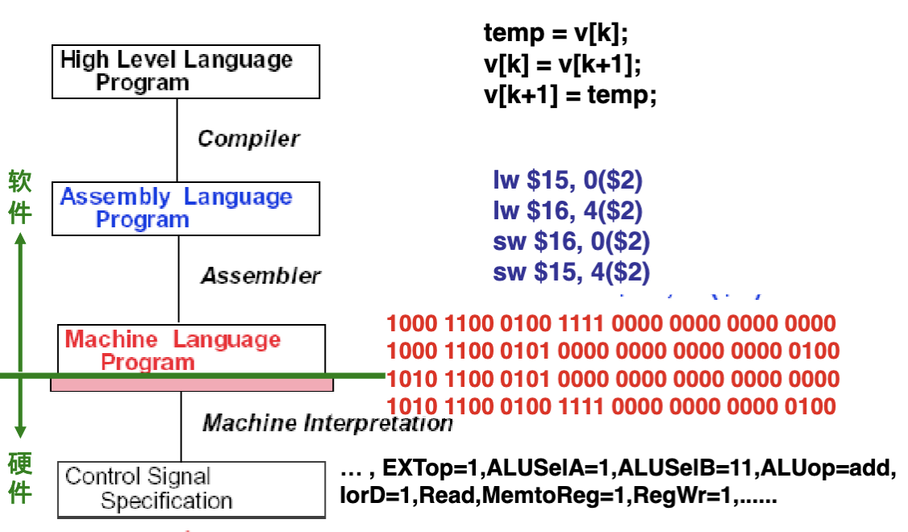
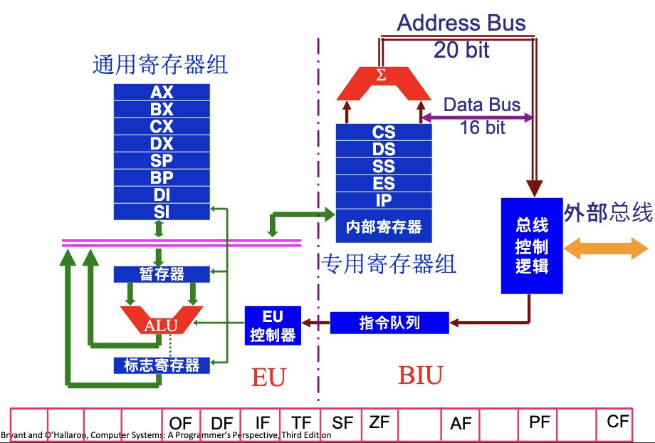
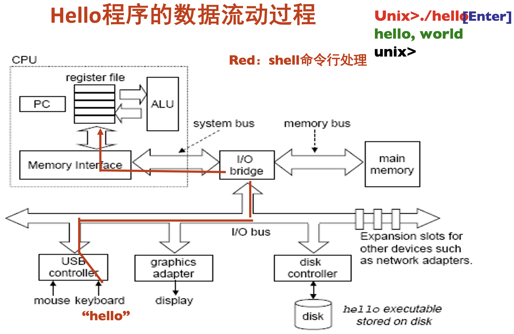
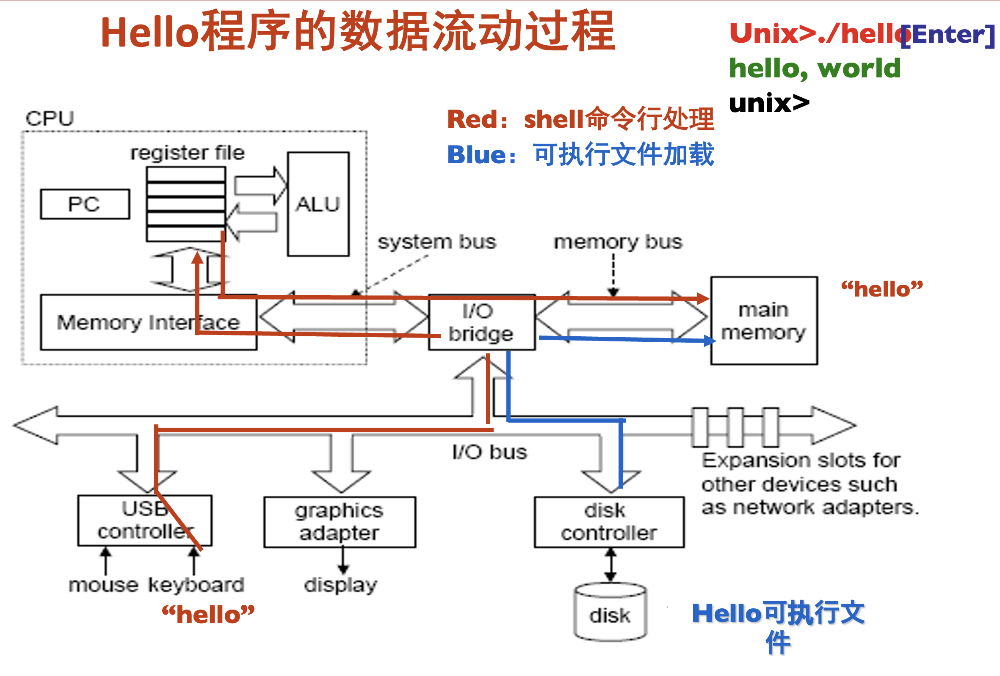

程序的执行过程

- 编辑代码：高级程序语言阶段
- Compiler编译器：汇编代码（指令操作用助记符表示）
- Assembler汇编器：将汇编代码转为机器指令（01字符串）
- 执行机器代码，调度硬件，运行程序；
8086CPU

通用寄存器组GPRS
>数据寄存器：
>>AX：累加器；
>>BX：基地址(Base)；
>> CX：计数寄存器(Counter)；
>> DX：数据寄存器；
>地址寄存器：
>>SP：堆栈指针Stack Pointer；
>>BP：基址指针Base Pointer；
>>DI：目标地址Dest；
>>SI：源地址Source；
内部寄存器
>CS：代码段code；和IP一起得到下一条指令的地址；
>DS：数据段data；
>SS：堆栈段；函数调用时的返回地址、局部变量和参数等；
>ES：附加段：
>IP：指令指针；总是指向当前正在执行的指令的下一条指令的偏移地址；
标志寄存器：
>OF：溢出标志Overflow；
>DF：方向Direction；
>IF：中断允许；
>SF：符号（ = 运算结果的最高位）；
>ZF：零标志（运算结果 = 0时，ZF = 1）；
>AF：辅助进位；
>PF：奇偶（低8位满足偶校验，PF = 1）；
>CF：进位/借位；
- 8086的地址总线为20，总共可寻址空间为\(2^{20} = 2MB\)；
一个完整程序的执行过程
- 从键盘上读取hello命令，即从键盘到I/O中继器再到CPU；
- 从磁盘(外存)加载可执行文件到主存(内存)，在这之前CPU先向主存发送读取的指令；
- 执行程序，将输出字符串从存储器写到显示器，即CPU先从内存上获取字符串的地址存入寄存器，再控制I/O设备输出到图形化窗口；